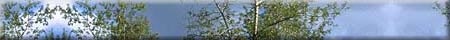
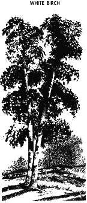
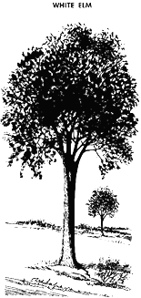
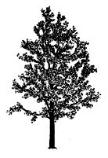
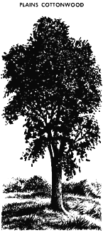
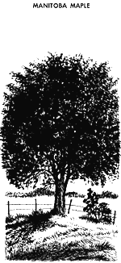
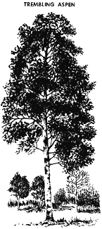
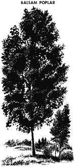

White Birch
White Elm
Green Ash
Plains Cottonwood
Manitoba Maple
Trembling Aspen
Balsam Poplar

White birch (Betula papyrifera Marsh.)
|  |
White birch was selected as Saskatchewan's
provincial tree in 1988. It is distributed throughout most of
the province, but is found mostly in the northern and central
parts. White birch require considerable light and prefer moist
sandy soil. They are generally found growing with a mixture of
conifers and broad-leafed trees. Pure stands of white birch often
occur as a result of a forest fire. The tree is fast-growing and
may reach a height of 21 metres and a diameter of up to 60 centimetres.
Appreciated for its stately beauty and easily recognized chalk-white
papery bark, white birch is frequently planted as an ornamental
tree in gardens and as a shelterbelt choice in farmyards.
The wood is moderately hard, strong and dense. It is creamy white to light brown in colour and straight-grained, with a fine, even texture. When dried properly, birch wood is well suited for furniture, turnery, flooring, veneer, novelties, joinery and firewood. Essential oils may also be extracted. Traditional Native Uses
|
White elm (Ulmus americana L.)
|  |
One of the largest trees, the white elm can
reach a height of over 40 meters and diameter of 2 meters or more.
In the forest, it forms a tall, straight trunk which rises to
a considerable height before branching. A shallow and very widely
spread root system gives the tree good support on most sites.
The bark is dark grey and broken into interlacing flaky ridges
in the trunk. The white elm grows primarily in the south-eastern
part of Saskatchewan. It thrives on a rich, moist, well-drained
sandy loam or gravelly soil where the water table is near the
surface. It is often found in mixtures with other hardwoods.
White elm produces one of the most valuable hardwoods in Canada. The wood is tough and used for furniture, flooring, sporting goods and boxes. The tree is widely used for street and ornamental planting. Traditional Native Uses:
|
Green ash (Fraxinus pennsylvanica Marsh . var. subintegerrima (Vahl) Fern.)
|  |
The seeds and twigs of this drought tolerant
and winter hardy tree provide a good food source for birds and
animals. It is a slow growing tree but can reach heights of up
to 15 meters. The oval crown and upright nature of the green
ash makes it an excellent choice for shelterbelts. Other uses
of green ash include furniture
stock, interior finishing wood products, flooring and fuelwood.
|
Plains cottonwood (Populus deltoides var. occidentalis Rydb.)
|  |
The plains cottonwood is commonly found along
streams and river beds. It has light yellow twigs, hairy in winter
and very coarsely-toothed leaves. The branches are stout, strong
and wide-spreading on a massive straight trunk. The trees flower
in spring prior to the appearance of leaves. The tree has small
tufted seeds that appear early in summer. Plains cottonwood are
found throughout the Cypress Hills Forest and in some areas of
the surrounding grassland area. They require considerable moisture
and do not grow well in dry sites.
The yellowish heartwood is light, soft, weak and brittle, and is surrounded by a layer of thick, almost white sapwood. A popular shade species, the wood is also used for fuelwood and fenceposts.
|
Manitoba maple (Acer negundo L.)
|  |
The Manitoba maple yields a sap which makes
a fine white sugar and was used widely during the depression in
western Canada. The tree grows to a height of 6.5 to 14 meters.
Though the tree grows quickly, it has a short life span. Manitoba
maple is a sprawling type tree with a trunk that often
divides near the ground into several stout spreading limbs with
bushy crowns. Manitoba maples are found in the portion of the
province south of the north fork of the Saskatchewan River, particularly
along streams, swamp margins and around lakes.
The wood is creamy white to pale brown in color and is relatively light, soft and fine textured. In the summer, the fruit of the tree serves as food for mice, squirrels and birds. It is planted for ornamental or shelterbelt purposes because it is very hardy being able to withstand great extremes in temperature, and fast growing. It has limited commercial use as furniture stock, interior finishing wood, flooring, fuelwood and maple syrup.
|
Trembling aspen (Populus tremuloides Michx.)
|  |
Aspen, commonly referred to as poplar,
makes up the majority of hardwood volume in Saskatchewan. The
wood is white to grayish white, relatively resistant to wear,
usually straight-grained, with a fine, even texture and is comparable
to spruce in strength. When properly seasoned, it works well,
holds nails satisfactorily, and takes a good finish. Due to its
availability and increased customer acceptance, aspen use is steadily
increasing. It is used for making oriented strand board, pulp
and paper, plywood, lumber, pallets, boxes, furniture stock, flooring,
chopsticks, fuelwood and for interior finishes and trim.
Traditional Native Uses
|
Balsam poplar (Populus balsamifera L.)
|  |
Balsam poplar is similar
to trembling aspen in most wood characteristics. Balsam poplar
is grayer, has a coarser texture and a higher incidence of wet
pockets in the wood. These drawbacks and the availability of trembling
aspen have detracted from increased use of balsam poplar. The
wood can be used for most of the same products as trembling aspen;
in Saskatchewan, it is used mostly for pulp.
Traditional Native Uses
|